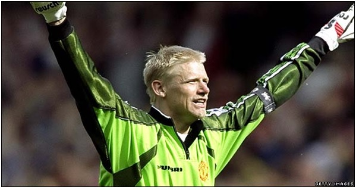
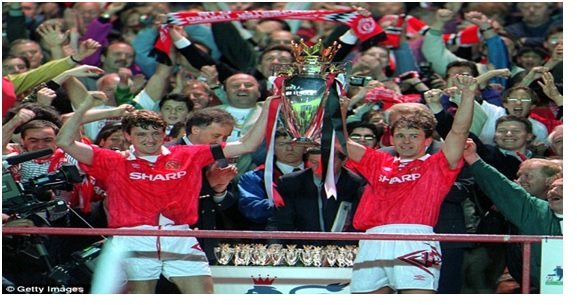

Chương 26

ăm 1991, Martin Edwards phát hành cổ phiếu niêm yết tại sàn giao dịch chứng khoán London, biến Manchester United thành công ty đại chúng, mang tên Manchester United Football Club plc. Từ nay, thay vì là sở hữu của Edwards và một số cổ đông nhất định, United thực hiện huy động vốn rộng rãi từ công chúng, ai ai cũng có thể làm chủ một phần CLB. Trên thị trường, United plc được định giá 47 triệu bảng. Sau một mùa hoạt động, công ty thu lợi nhuận 7.3 triệu bảng, trên tổng doanh thu 25.2 triệu. Edwards, nay là chủ tịch CLB kiêm giám đốc điều hành (GĐĐH) plc, và các thành viên BLĐ thu lời lớn từ việc niêm yết; người hâm mộ thì hứng khởi, đổ xô mua cổ phần. Đa số CĐV không giàu có gì, mỗi người chỉ mua vài chục đến vài trăm cổ phiếu, hưởng cổ tức mỗi kỳ chục bảng đã là nhiều. Nhưng tiền không phải vấn đề. Được sở hữu một phần CLB mình yêu, được mời dự đại hội cổ đông, được góp tiếng nói, thế là sướng rồi!
Alex Ferguson không hào hứng với việc thành lập công ty, sợ rằng từ nay United sẽ hoạt động với mục đích làm đầy túi cổ đông, thay vì toàn tâm toàn ý cho thành tích trên sân cỏ. Ông từ chối cổ phần do BLĐ mời chào, tập trung vào công tác chuyên môn. Hè 1991, Fergie bổ nhiệm Brian Kidd vào vai trợ lý HLV, thay thế Archie Knox. Ông cũng ký hợp đồng với hai tân binh sáng giá: Andrei Kanchelskis người Nga, và Peter Schmeichel người Đan Mạch.
Cả hai tân binh đều ngay lập tức chiếm được vị trí chính thức. Kanchelskis trấn giữ bên cánh phải, cùng Giggs ở cánh trái làm nên bộ đôi tiền vệ biênsố một giải VĐQG Anh những năm đầu thập niên 1990. Schmeichel thì theo thời gian, ai cũng sẽ công nhận là thủ thành xuất sắc nhất mọi thời đại của United. Nhiều người còn đi xa hơn, đánh giá anh là xuất sắc nhất trong lịch sử túc cầu, trên cả Lev Yashin, Dino Zoff hay Gordon Banks. Có thể nói: Schmeichel hoàn toàn không có điểm yếu. Anh không những phản xạ tuyệt vời, ra vào hợp lý, mà còn nổi tiếng là ông vua của những tình huống một đối một, và phân phối bóng cực tốt. Thân hình to lớn, lực lưỡng, giọng nói sang sảng như chuông, Schmeichel làm chủ hàng phòng ngự CLB. Dưới sự chỉ huy của anh, cặp trung vệ Bruce-Pallister vốn đã giỏi, nay lại càng hiệu quả hơn. Thủ thành như vậy mà giá mua chỉ 500000 bảng, thật là hợp đồng vào loại hời nhất thế kỷ![1]
Với nhân sự mới, đội hình United trở nên chất lượng bậc nhất nước Anh. CLB hạ Red Star Belgrade 1-0 (McClair lập công), lần đầu đoạt Siêu Cúp Châu Âu. Cũng McClair ghi bàn duy nhất, đưa United vượt qua Nottingham Forest trong trận chung kết Cúp Liên Đoàn. Cúp này tuy không mấy giá trị, nhưng có nó, Quỷ Đỏ hoàn tất bộ sưu tập danh hiệu quốc nội.
Trong giải VĐQG, United khởi đầu một cách không thể tốt hơn. Trong mười trận đầu tiên, đội thắng đến tám. Đến mùa Giáng Sinh, họ vững vàng ở ngôi nhất bảng, chức vô địch nằm trong tầm tay. Bước ngoặt mùa giải diễn ra vào khoảng cuối 1991, đầu 1992, khi chỉ trong vòng 18 ngày, United phải ba lần gặp Leeds, trong khuôn khổ ba giải đấu: VĐQG, Cúp FA, và Cúp Liên Đoàn. Kết quả hết sức khả quan: Đội hòa trận đầu, thắng hai trận sau, đá văng Leeds khỏi hai cúp. Nhưng chính nhờ bị loại khỏi các cúp, Leeds có cơ hội tập trung toàn lực vào giải VĐQG, còn United thì ngày càng mỏi mệt do phải căng sức thi đấu trên nhiều mặt trận.

Người khồng lồ Đan Mạch Peter Schmeichel (Ảnh: Bbc.co.uk)
Thời điểm mùa giải chỉ còn sáu vòng, United vẫn ngự trị trên đỉnh bảng. Song đó cũng là lúc họ bước vào cơn ác mộng: Phải thi đấu bốn trận chỉ trong vòng bảy ngày. Trận đầu tiên, đội thắng Southampton 1-0, với cái giá phải trả là chấn thương của Paul Ince. Sang trận thứ hai, những đôi chân bắt đầu mệt mỏi chỉ kiếm nổi trận hòa với Luton. Danh sách chấn thương tiếp tục kéo dài: với ba nạn nhân mới: Paul Parker, Lee Martin và Danny Wallace (cộng thêm Bryan Robson và Mark Robins phải nghỉ dài hạn). Bước vào hai trận tiếp theo, các cầu thủ gần như kiệt sức, lần lượt tung cờ trắng trước Nottinham Forest và West Ham. Ở vòng áp chót, United thua tiếpLiverpool, chính thức dâng cúp vào tay Leeds.
Sau trận đấu, hai fan hâm mộ Liverpool giả vờ mang giấy đến xin chữ ký của Sharpe, Giggs và Ince. Xin xong, họ xé giấy ra từng mảnh vụn, quẳng vào mặt ba cầu thủ đang đứng tẽn tò, vừa cười hô hố vừa chọc quê: Chúng tao cần gì chữ ký những thằng thua cuộc. Chứng kiến cảnh ấy, Ferguson dặn học trò suốt đời không được quên, cần nhớ mãi nỗi sỉ nhục để làm động lực tiến lên: Chúng dám khi dễ mình, thì mình phải luôn chiến thắng, cho không ai khi dễ được nữa![2]
Mùa 1991-1992, United là đội để lọt lưới ít nhất giải VĐQG, với chỉ 33 bàn, nên không lạ khi một thành viên trong hàng thủ CLB, Gary Pallister, giành giải Cầu Thủ Xuất Sắc Nhất Nước Anh (PFA). Trái với phong độ đỉnh cao của Pallister, trên hàng công, Mark Hughes bắt đầu thất thường.Nửa đầu mùa, Hughes liên tục nổ súng; United ghi được đến 45 bàn. Nửa sau,đội chỉ kiếm thêm được 21 bàn, còn Hughes trải qua 15 trận liền không biết mùi lập công. Do đó, bước vào mùa giải mới, Ferguson sắm tiền đạo Dion Dublin. Rủi thay, Dublin vừa chơi được mấy trận đã chấn thương, phải nghỉ nửa năm, khiến hàng công Quỷ Đỏ “mèo lại hoàn mèo”. Đến tháng 11, 1992, đội chơi 16 trận, chỉ ghi nổi 17 bàn; thành tích quá nghèo nàn buộc Ferguson phải mua bổ sung Eric Cantona từ Leeds.
Thông thường, khi chuyển đến CLB mới, cầu thủ cần thời gian để thích nghi. Cantona thì không thế. Trận ra mắt ngày 6 tháng 12, gặp Manchester City, tiền đạo người Pháp ra sân từ ghế dự bị, chưa kịp lập công, nhưng trong 5 trận kế, anh phá lưới liền 4 lần. Quan trọng hơn nữa, từ khi có Cantona, các đồng đội anh ghi bàn như xả lũ. Từ chỗ đang tịt ngòi, United lần lượt hòa Sheffields Wednesday 3-3, đè bẹp Coventry 5-0, hạ Tottenham 4-1, rồi thắng QPR 3-1.
Sở dĩ như vậy là nhờ tài kiến tạo tuyệt luân của Cantona. Trên hàng tiền đạo United, Cantona chơi lùi, hoạt động trong vai trò nhạc trưởng điều tiết thế trận. Có thể ví Cantona như một định tinh, còn các cầu thủ khác như vệ tinh chuyển động chung quanh, chờ những đường chuyền sát thủ của anh để băng lên ghi bàn. Dùng khả năng cầm bóng thượng thừa, Cantona hút đối thủ vào mình, rồi thừa cơ kiến tạo cho Hughes hay McClair, hoặc nhả bóng lại cho tuyến hai dứt điểm. Hơn thế nữa, với phong cách vô cùng tự tin, và một tinh thần thép, chỉ riêng sự hiện diện của Cantona đã truyền cảm hứng, giúp đồng đội lên tinh thần. “Chúng tôi ai cũng hồi hộp, căng thẳng trước trận đấu”, Mark Hughes kể, “Riêng Eric thì không. Anh ấy luôn tập trung, bình thản”. Tuy không mang băng đội trưởng, Cantona thật sự là một thủ lĩnh[3].
Tranh đua ngôi vương mùa 1992-1993 là tam mã United, Norwich và Aston Villa. Sau những trận thắng liên tiếp mang đậm dấu ấn Cantona, Quỷ Đỏ khựng lại vào tháng ba, đá năm trận chỉ thắng một, rớt từ hạng nhất xuống hạng ba. Sang tháng tư, đội lấy lại phong độ, đánh bại Norwich 3-1, do công Giggs, Kanchelskis và Cantona, để vươn lên hạng nhì. Muốn trở về ngôi đầu, United cần vượt qua Sheffield Wednesday trong trận cầu ngày 10 tháng 4, đồng thời hy vọng Villa, đội bóng của cố nhân Ron Atkinson, không thắng trước Coventry. Trên sân Old Trafford, Wednesday thi đấu kiên cường, vượt lên dẫn trước. Mãi phút 86, thủ quân Steve Bruce mới đánh đầu thành công, gỡ hòa 1-1. Do trọng tài bị... chấn thương, khiến trận đấu bị gián đoạn, bảy phút được cộng thêm. Phút 96, khi HLV Wednesday, Trevor Francis, đang ra dấu thúc giục thổi còi, lại Bruce lên tham gia tấn công, đội đầu ghi bàn thứ hai. Cả SVĐ nổ tung trong niềm vui. Bên ngoài đường pitch, Alex Ferguson và Brian Kidd nhảy tưng tưng như con trẻ. Họ biết rằng trong trận cầu còn lại, Villa đã bị Coventry cầm chân.
Toàn thắng trong ba trận kế tiếp, trước vòng áp chót, United hơn Villa bốn điểm. Ngày 2 tháng 5, Villa gặp Oldham. Nếu Villa thất bại, Quỷ Đỏ sẽ đăng quang, không cần đợi kết quả trận gặp Blackburn một ngày sau đó. Chiều mùng hai, do quá hồi hộp, Alex Ferguson không dám xem TV, mà bỏ đi đánh golf với cậu con trai Mark. Đánh đến lỗ thứ 14 thì một người lạ từ cổng chạy vào, vừa chạy vừa hét oang oang: “Ông Ferguson, ông Ferguson ơi, Manchester United vô địch rồi”. Chẳng biết người đó là ai, hai bố con Ferguson ôm chầm lấy ông ta. Ngay sau đó, họ quẳng gậy, lên đường về nhà. Lúc đi ngang mấy golf thủ người Nhật, nhận thấy một người đội mũcó chữ Sharp, tên nhà tài trợ của Manchester United,Ferguson ngỡ ông cũng là fan Quỷ, bèn hăm hở báo tin:
- Bạn ơi! Manchester United vô địch rồi đấy!
-Ơ ơ…vô địch gì cơ? Ông người Nhật ngẩn tò te…
26 nămchờ đợi mỏi mòn, trời rốt cuộc đã chiều lòng người. Các cầu thủ ùa đến nhà Steve Bruce tổchức tiệc mừng, bất chấp việc phải ra sân gặp Blackburn ngay ngày hôm sau. Ferguson lần này cũng cảm thông: Thôi kệ, cho chúng nó vui một tý, bao nhiêu năm mới có một ngày. Fan hâm mộ thì khỏi phải bàn. Họ đổ ra đường, phất cờ, nhấn còi xe, hò hát, diễu hành khắp nơi; Đường phố Manchester đông vui như trẩy hội, chẳng khác cảnh Rio ăn mừng chức vô địch World Cup của đội tuyển Brazil.
Giá vé chợ đen trận United-Blackburn bị đẩy lên đến 100 bảng, nhưng khán đài không còn một chỗtrống. Ngay cả vợ Ferguson, bà Cathy, vốn không đi xem bóng đá bao giờ, cũng có mặt trên sân. Tuy đêm trước tiệc tùng tới sáng, United vẫn đủ sức hạ đẹp Blackburn 3-1, với các bàn thắng của Giggs, Ince và Pallister. Sau trận đấu, khi Bryan Robson và Steve Bruce lên nhận cúp, máy quay chiếu lên khán đài danh dự. Người ta nhận thấy Best, Law, Charlton và những cầu thủ khác trong đội hình vô địch 26 năm trước đều có mặt. Tất nhiên không thể thiếu Sir Matt Busby. Khuôn mặt Sir rạng rỡ vẻ tự hào, đôi mắt rưng rưng ngấn lệ.
Chứng kiến đội bóng thân yêu trở lại đỉnh vinh quang, Matt Busby không còn gì tiếc nuối. Ông ra đi vào tháng một năm 1994, hưởng thọ 84 tuổi. Để tưởng nhớ công ơn người HLV vĩ đại, BLĐ United cho dựng tượng ông trước sân Old Trafford. Khánh thành ngày 27 tháng 4, 1996, tượng do nhà điêu khắc Philip Jackson tạc bằng chất liệu đồng, cao hơn ba thước, nặng quá một tấn. Thân tượng rỗng, chứa đầy những khăn, áo, thiệp, cùng những vật lưu niệm khác do người hâm mộ đem đến đặt trước Old Trafford khi nghe tin Sir Matt qua đời.

Là đồng thủ quân, Bryan Robson và Steve Bruce cùng lên nhận cúp bạc vô địch Anh mùa 1992-1993 (Ảnh: Dailymail.co.uk)
Chú thích:
[1] Trong thời gian khoác áo United, Schmeichel hai lần được IFFHS trao tặng danh hiệu Thủ Môn Xuất Sắc Nhất Thế Giới (1992 và 1993).
[2] Fan hâm mộ Leeds cũng ghét United không kém gì fan Liverpool. Hồi mới đến Old Trafford, Ferguson không biết điều đó, nên rủ trợ lý Archie Knox đến Elland Road xem Leeds đá với Crystal Palace. Nhận ra Fergie. CĐV Leeds mắng ầm lên, rồi ném đồ vào người ông. Lần khác, một fan Leeds cho Eric Harrison ăn đòn, vì nhầm Harrison là Ferguson!
[3] Bryan Robson bấy giờ đã lớn tuổi, lại hay chấn thương, nên rất ít ra sân; người thường đeo băng đội trưởng là Steve Bruce. Đến khi Bruce rời Old Trafford, băng này mới được trao về Cantona. Cantona là thủ quân người nước ngoài đầu tiên trong lịch sử United (không tính các cầu thủ Scotland, Wales, hay Ireland).